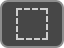
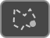

<div class="action-buttons">
    <!-- https://scotch.io/tutorials/angular-2-transclusion-using-ng-content -->
    <!-- card.component.html -->
    <!-- <ng-content select="[card-type=body]"></ng-content> -->
    <!-- Notice that we add select=[card-body]. The square bracket [] means attribute. It means "Replace me only if the element has card-body attribute". -->
    <!-- app.component.html -->
    <!-- 
        <h1>Single slot transclusion</h1>
        <card header="my header" footer="my footer">

            <div class="card-block" card-body> We add the card-body attribute here
                <h4 class="card-title">You can put any content here</h4>
                <p class="card-text">For example this line of text and</p>
                <a href="#" class="btn btn-primary">This button</a>
            </div>

        <card> 
    -->

    <!-- <ng-content select="[card-type=body]"><ul><li *ngFor='let item in menuJson' (mouseover)='eventService.trigger(item, item.mouseoverName)' (click)='eventService.trigger(item, item.clickName)' [style]='item.style'>item.text</li></ul></ng-content> - -->

    <div class="left-action" *ngIf="!hasContent">
        <!-- Propper way of using images, use svg and sprite.svg in assets. Lecture 75: https://www.udemy.com/advanced-css-and-sass/learn/lecture/8859718#overview -->
        <!-- <svg>
            <use xlink:href="../../../../assets/sprite.svg#icon-filter-list-button"></use>
        </svg> -->
        
        
        <div class="file-name-title">DataFile_Name.csv</div>
    </div>
    <!-- show default html, (iterate through ngFor and construct list with objects that have {style} to override styles) if there is not content, otherwise render the inserted content -->
    <!-- need to beable to input html  -->
    <div class="left-action" #leftwrapper *ngIf="hasContent">
        <ng-content select=[left-list]>
        </ng-content>
    </div>
    <div class="center-action">
        <div>
            
            
        </div>
        <div>
            
            
        </div>
        <div>
            
            
            
            <select>
                <option>Predefined Selection</option>
            </select>
            <button>Select Points</button>
        </div>
    </div>
    <div class="right-action">
        
        
        
    </div>
</div>
<div class="main-content">

    <div class="inner-main" [hidden]="hideSearch">
        <div class="right-container outlet" ngResizable [rzHandles]="'w'" position="'0,0'">
            <router-outlet name="center-main"></router-outlet>
        </div>
        <div>Main Content Area</div>
    </div>
</div>
<div class="drawer-container" ngResizable [rzHandles]="'n'" position="'0,0'">
    <div class="left-inner">
        <div class="local-footer">
            <div class="tree active">
                <div class="drawer-button">Tree Structure</div>
            </div>
            <div class="history">
                <div class="drawer-button"> History</div>
            </div>
        </div>
        <div class="drawer">
        </div>
    </div>
    <div class="right-inner">

    </div>
</div>